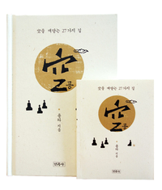

龍陀 師 [著]
妙空 [訳]
巻頭言
この本を読む目的は、空
を理解し、体験することにあります。
どうして空を理解し、体験しなければならないのか。人は目を開けるやいなや、目の前に展開される世界について、そのまま「ある」という観点をとります。そして、その直ちに「ある」と思う対象を分別、是非、執着しながら、様々な苦悩を作り出します。
人類史を振り返ってみると、大なり小なり、苦でもってつづられています。死ぬことが苦、病むことが苦、老いるのが苦、会いたいのに会えないのが苦、会いたくないのに会ってしまうのが苦であり、得ようとするのに得られないのが苦です。一つ得ると、もう一つ得たいとするのが苦であり、習慣に染まってしまい、健康と幸
せの障害になるとわかっていながらも、その習慣の奴隷になってしまうのが苦であり、習慣が中毒になり、いつまでも抜け出せないのが苦であり、一つのものを二人が取り合うのが苦であり、小さな価値のために組織ぐるみで戦い、国家間で戦争するのが苦です。人間の生きざまがそのようであることを誰も否定できない。じつに悲しいことです。
人類は、一方ではこのような苦の淵にとらわれ、他方ではその苦を解決しようと努力してきました。光と影のシーソーゲームになっています。それでも、善良な思いで、いいことをしようとする人たちがいたというのは美しいことです。ところが、その良い行いまでも、けっきょくは取り繕いの策にすぎないということを知るようになります。
全人類歴史に蔓延している一切の苦悩を元から打ち壊し、抜本塞源
*してしまう方法がないのでしょうか。それはまさしく、釈迦牟尼をはじめとして、もろもろの祖師や先覚が提示する空の教えです。
読者におかれては、空の理致を悟り、「自分」と「世界」を当然の事実として実体視して分別し、是非を問い、執着して生きてきた人生を考えなおしてください。そして、行き詰まりから解放された生き方へと踏み出してください。
この本に紹介する 27 個の空理
（空の理致）はもちろん、解題も何回も精読してみられると、大きな助けとなるでしょう。
この本に述べられている 27 個の空理は、現在、筆者が運営する同事摂
修練会の高級過程で教材として使われています。
空理をまとめ始めたのは、著者が色即是空を把持
した大学時代でした。ですから、この冊子は 50 余年をかけて作ってきたことになります。まさしく長い歳月、あたためてきた本です。
この本は、ただの一度だけ読んで終わってしまうものではありません。何度も読み返し、思惟しながら空の理致をくりかえし「あはっ」と納得できなければなりません。そうして、当然のごとく思っていた多くの「実体」や「概念」が春山の雪が溶けるように消えていくのを再度感じながら、「あっ、このように生きるのが応無所住而生其心
の生き方なのだなぁ」と告白が出てくる必要があります。
心より、読者のみなさんにおかれては「とらわれるもののない生き方とはこういうものなのだなぁ。このような状態の生き方を開かれた生き方だというのだなぁ」と、大自由の人生に出会われることを願います。
とうとう、27 個の空理を整理して本に出すと思うと、いったん、スッキリします。感謝の思いが上がってきます。空という救援解脱論を編み出してくださった仏祖の方々に心より感謝します。
33 余年間、修練場に通ってくださった 2 万余人の修練生のみなさん、ありがとうございます。
27 個の空理が本となって出るように提案し、激励してくださった 선혜 유소림 (ソネ ユソリム) 氏、この小冊子の原稿が整理されるまで、じっと待ってくださった「民族社」にも深い感謝を表します。終わりに、粘り強く力を添えてくれた、わたしたち共同体の家族には、どう感謝してよいかわかりません。
願わくは、無限宇宙にある有形無形、有情無情、すべての存在の幸福解脱と、澄んで明るい相生気運のために、この一物の全存在、全エネルギーを奮い起こして伝えますので、無限の福徳が与えられますように...。
2015 年 晩秋
天領山のふもと、幸福村
にて。
龍陀 合掌
解題 1 まず初めに読むこと
解題を「まず初めに読むこと」としました。
なぜ、このような奇妙な題を付けたのか。これから、読者のみなさんは立て続けに「空
」という一つのものに対して思索するようになります。この小冊子の主題は空理です。仏教を空門
であるというのは、空が仏教の教えのすべてだと言えるほど、空を重視したからです。
筆者は、大学 2 年の 1963 年、般若心経の色即是空
を理解する、一世一代の歓喜体験をしました。それ以来、空は人生の羅針盤になりました。自然と空の理知に対して、空の理解に対して関心を持って生きてきたつもりです。その結果、出家修行中の 1978 年ごろ、空を悟る法 10 個を定めました。その後も一つずつ足して、いまは全 27 個になっています。
わたしたちはどうして、空と空理を学ばなければならないのでしょうか。このように解題で、必ず読むべきことと強調するのは、読者がこの本を読むと空の価値と意味、その趣旨を鮮明に理解することができ、空を看破しなければならないという信念が生じるからです。さらに、読者も空を体得できるからです。
結論から言うと、空を学ぶにあたっては、空を理解する次元を超えて悟りの次元に、そして悟りの次元を超えて証得（体得）の次元に進まなければなりません。
1.空理と幸不幸
人生の根本的問題は苦、すなわち不幸であることです。苦から抜け出し、幸福に至ること（離苦得楽）が人生の目的です。苦から抜け出るには、苦の原因を知らねばなりません。苦の原因は、痴・貪・瞋の三毒です。三毒の中でも、痴（おろかなこと）は原因中の原因です。貪瞋痴が苦の祖先ならば、痴は三毒の元祖格です。
痴はたいへん大きな概念です。しかし、おろかさ中のおろかさとして、娑婆世界のすべての苦をかき集める源泉的なおろかさがあります。その源泉的おろかさが種となり、億万に至るおろかさが絶えることなく生じ出て、人は生きていくほどに、いっそう、その中にはまりこみます。人類史からすべての苦と戦争がなくなるには、その源泉的なおろかさを除去しなければなりません。みなさんはその源泉的なおろかさが何だと思いますか。
それは、まさしく、「わたし」というものが世の中に「ない」のに、「ある」と考えることです。ほんとうに、まっとうに幸福になることを願うならば、解脱しなければならず、解脱するためには、「ない」ものは「ない」と、正しく悟らねばなりません。間違いなくあるように見えるものも、よく、思惟してみるとないのです。この冊子で、その「ない」*ことの理知、すなわち、空理を悟ってください。
人類の文化文明、政治、経済、教育、道徳などすべては、人生の苦を解決しようという努力の末に採りいれた実りであります。しかし、そのような努力も、苦の潜在的解決や緩和、あるいは、若干の人間的成熟をもたらしただけで、苦痛の根まで引き抜くことはできずにいます。根がそのままで、剪定しながら、枝一つのあれこれ処方をやっているだけなのです。
もちろん、そのような作業も必要です。歯医者に行って痛む歯を治療するとか、経済を興し生活を豊かにし、教育を通じて心性を純化して苦を少なくすることも意味があります。
しかし、根本的処方がない限り、苦はいつまでも続いてしまうのです。文字通り、根本から完璧に引き抜いて苦痛を根治する薬剤。それがまさし「ある」と思えるものを「ない」と見る空思想なのです。
空を通じてすべての苦痛を根治することができるということ、これは人類史において仏教がこれぞとばかりに誇るところです。
2 悟りと解脱感
重ねて言います。空理を理解することにより、「なるほど、そのとおりだ。ないんだ。あなたもわたしも、世界も本来ないんだ。」と、はっきりと認識すると、境界*に引きずられていた拘束感が消えて、開放された解脱感を得るようになります。
解脱感という感覚。それは空理把持（理解）の決定的な功徳です。すべての感覚認知過程には、それに相応する感覚がついています。経典には「感覚」の重要性がとくに強調されているわけではありませんが、経典の行間に留意してみると、その重要性は面々と流れていることがわかります。多分に、仏法の歴史は行間を引き出すことにより発展してきたのです。
行間には地域性と時代性を超えて、超地域、超歴史的に満足させうる教えが入っているものです。その地域、その時代にふさわしい離苦得楽のための知恵を行間から発掘しだすことこそ、まさしく知恵宗師の仕事でしたし、それが故に、釈迦牟尼とはほとんど関係がないように思える言葉なのに、如是我聞
と大事にされ、経典化されたのです。
空の理致を悟ったならば、その悟りに付随する感覚があるものです。その感覚に気が付かなかったとしたら、誠に残念なことです。学問の口惜しさとはそこにあります。感覚に留意するのか、しないのかということが、道と学の違いです。読者におかれては、空理の理解に相応する感覚を得られのか留意してください。
この小冊子の使命の一つは、読者に空を理解したときに付随する感覚をわかっていただくことです。この小冊子が案内するすべての空理の観行には、それに相応する感覚、すなわち解脱感が付随していることを深く留意してください。27 個の空理を吟味するたびに、その一つひとつにサーッと開ける解脱感を感じるようになるでしょう。悟りの初期では、空理を観行するときにのみ、妨げるもののない解脱感を感られるでしょうが、その観行の回数が多くなると、生活全般が解脱感で満たされるようになります。
3. 方便としての空
仏教のすべての教えは、それ自体が真理であるということではなく、離苦得楽の手段（方便）になるということで、より大きな意味を持ちます。もちろん、空や空理は、それ自体が学問的真理性を持っていることを否定しません。しかし、離苦得楽の決定的な方便になるから、仏教の世界で貴重視しているのです。方便として捉えられている言葉が、真理性を併せ持つとすれば、もちろん、いいことですが、そうでないとしても、離苦得楽（幸福、解脱）の手段になれば、立派な教えであり、法門なのです。
この本に記した 27個の空理もやはり、いったん、真理性次元ではない、方便性次元で取り扱っていることを明言しておきます。主や客に対する分別 - 是非 - 執着を放下し、自由さを経験するようにする観点があるとすれば、それらどの観点であろうと、空理なのです。
したがって、この本の再販、3 版時には 27空理ではなく、50 個、100 個の空理になっているかもしれませんね。
4. 尊重と交流
さらに、すべての学習者が忘れてはならない、非常に重要なことを述べておきます。それは、空理の理解と習得のみ が解脱のための唯一の道であると考えてはならないということです。
空理という処方せんは、わたしたち人間の苦を解決するにおいて、この上なく卓越しており、根源的な道であることは間違いないと思うが、わたしたち人類には離苦徳楽と解脱のための道がいくらでも開かれているということを忘れないでください。
つまり「これだけが唯一の道だ」などという法執に落ち込んでしまうことをよく警戒しなければなりません。わが家にこの法があるとすれば、他家にはそこの法があるというものです。隣り近所との平和共存が一層重要だということもあるのです。
「尊重と交流」という言葉を銅版に刻むように留意してください。百貨店に品物一種類だけ置いてあったとしたら息が詰まることだろう。わが家のが絶体の真理である掲げて、他家に掲げられている別の真理を間違っているとして是非する心理が、歴史のあちこちで、どれほど血なまぐさく残酷な様相をなしてきたか、人間の知性を粛然とさせて、ふり返らなければなりません。
わたしたちすべての幸せのため、方便として存在するのが真理です。自分が信じる真理に忠誠をつくすのは美しいことですが、自分が支持しない真理に忠誠を尽くす人たちを尊重するのは、よりいっそう美しいことです。今日は自分の真理が正しく、あなたの真理は正しくないと思えるとしても、明日はあなたの真理も正当性があると思えるかもしれず、あさってには自分の真理を引っ込めて、あなたの真理に帰依するともしれないと。
それで、粘り強く尊重しながら、誠実な交流を通じて、より穏当で、より至高なる真理をめざして行べきです。このように開かれた意識でもって、自分の道を行く者、そのような人が本当の教養人です。
27 個の空理
この 27 個の空理は一読して理解したと終えてしまうものではありません。章ごとにあるいは全章を可能な限り静粛に、粘り強く反復して読み、思惟し、「わたし」というものをはじめ存在する一切のものが実体のない、非実体（空）として感じられるようになってください。そうすると、存在するものに対する執着がなくなるようになり、心に大きな平安（解脱）と生活に大きな平和（慈悲）をもたらします。
まさに、観自在菩薩
の照見五蘊皆空
度一切苦厄
を具現してください。
空理を了義*する 27 個のみち
- 縁起故空
- 放下顕空
- 無限故空
- 無常故空
- 成住壞空
- 生滅故空
- 不可得空
- 残像故空
- 化合故空
- 分析故空
- 億分一空
- 粒子故空
- 波動故空
- 夢幻故空
- 重重縁空
- 性起故空
- 自性故空
- 自体故空
- 自然故空
- 依根故空
- 心造故空
- 念体故空
- 破根顕空
- 破雲顕空
- 微視故空
- 遠視故空
- 永時故空
1 縁起故空
すべてのものは因縁により存在しているので、空です。
天下のすべての存在が、他のものどもと因縁を結ぶことによってのみ、存在することができるとするならば、どのような存在も存在それ自体を実体とすることはできない。
すべての個体は縁起的存在であり、非実体であり、無実我であり、無我であり、非我であり、空であります。
すなわち、存在界はすべてがひとかたまりの有機体であり、そのどの個体も縁起の尾を断ち切り、ひとり独立的に存在することができません。
釈迦牟尼仏陀はそのような存在法則に対して「これがある故に、それがあり、これがないゆえにそれがなく、これが起こるゆえにそれが起こり、これが消えるゆえにそれが消える（此有故彼有、此無故彼無；此起故彼起、此滅故彼滅）」と語られた。
ある存在を実体として見るときは、それは分別 - 是非 - 執着の対象になるが、反対に、非実体として見るとするならば、そのような対象になることができません。
すぐ前者の場合は、執着による苦悩の淵にはまる可能性があることを意味し、後者の場合は、執着するほどの対象が本来ないため、その可能性が源泉的に消えてしまいます。
どうでしょうか。
この場面では、救いと解脱の曙光がまばゆく輝いていませんか。香のように広がってこないでしょうか。
2 放下顕空
ただ、手放すと、すべては空です。何であろうと、それをこころの中に置いておくときや執着しているときに、初めて、実体として意味を持つようになります。
手放してしまうと、つまり、自分の意識空間にこころの内容（心のなかのすべてのもの。感情、欲求、意志、信念、印象、事実だと考えるすべてのもの）として存在しなければ、どのようなものも存在意味がありません。
放下については、特別な論旨が必要ありません。ただ、手放してしまえばいいだけです。ふくらはぎにくっついたカエルを払い落とすがごとく、一切の概念や価値をそのまま消し去ってしまうのです。
放下顕空は空の理致ではなく、空を体験するための単純な実践論です。
自分の中にある心の内容を下したあと、それを持っているときの感覚と比較してみてください。大きかろうと小さかろうと、スッキリした解脱感を感じることでしょう。どのような意味においても、放下顕空が最も強力な方便です。
3 無限故空
無限の次元に立ってみると、どのようなものもその存在意味を見出すことができなくなり、空なるものです。世の中に存在するものはすべて、互いに交わり関係を結ぶときに存在できるとするならば、その存在が実体なのであり、ある個体や部分が実体ではありえません。
したがって、人が「私」という個体を念頭に置きながら実体化し、執着して、苦悩の奈落に落ちるとするならば、 「私」という個体アイデンティティを止揚し、全体、あるいは無限アイデンティティを取るのがよいでしょう。
一日生きるカゲロウも、100年生きる人も、1000年生きる松の木も、無限の前には刹那の存在です。
無限の前で、どのような個体が実体としての様相を見せて、いきがることができるでしょうか。
4 無常故空
すべて存在するものは恒常ではなく、瞬間瞬間変わるので、空です。
実我を想定するときは、我の固定性が前提となります。しかしながら、固定体がなくして、刹那を前後して、刹那前の我は刹那後の我ではないとするならば、「わたし」あるいは「それ」であると指定されるそのなんであろうと、指定する者の不安定で主観的錯覚であるだけで、固定された実体ではありません。
暖炉の上の水滴が、すぐにも蒸発するだろうさなかに、その水滴が「私は水滴だ」と、自分の正体を主張できるでしょうか。
同じように、存在するすべてのものは水滴がすぐにも蒸発するように無常に変わりゆくのであり、「その何か」として固定させ、実体視することはできません。ただ、愚かしくも変化を変化として悟ることができず、固定した実体が持続していると思い込むのです。
微細な変化を識別する能力があるものの目で見ると、まったく「それ」あるいは「私」とするだけの実体というものはないのです。この繊細な感知能力こそ、まったくもって大きな知恵です。
明確な悟りはないとしても、その理致は理解できます。理解（先悟、解悟）した後に、理解した状態を深く反復して瞑想すると悟りの水準に到達するようになり、ついには永きにわたって私わたしと生きてきた固執的我執から根本的に抜けだすことができるのです。
「わたし」としながら、すでにその「私」は変化し、消えてしまっているので、「私」とするだけのものはないと、重ね重ね反復して吟味してみなさい。この時感じられる遮るもののない開かれた感覚が解脱なのです。
5 成住壊空
存在するすべてのものは、生まれでて（成） - しばらくとどまっては（住）- 壊れて（壊）- 消え去ってしまう（空）ので空です。この観は無常故空の範疇に入ります。
6 生滅故空
生滅とは生住異滅を約して使う言葉です。存在するすべての生命は、誕生しては（生）- とどまっては（住）- しばらく変化を繰り返してから（異）- 消えてしまうため（滅）空です。
この観も、成住壊空と同じ法理ですが、成住壊空は無生物に傍点を置き、生滅故空派生物に傍点を置いただけです。
今日のわたしが明日も存在すると前提すると、「わたし」という実体があるようになり、「わたし」に執着する心が発達するようになります。
しかし、今日の「私」を見るとしても、しばらく後には必然的に来る「消えてない状態」を同時に受け入れられるならば、「私」は「私」として感じられるというようよりは、すっかり空いた様子で感じられるのです。
「わたし」としながら、「今はしばらくあるようなわたしではあるが、しばらく後には消えて永遠になくなる存在ではないか」と、重ね重ね反復して、「消えてなくなった状態」を観照し、観照すると、「わたし」に対する実体感が蒸発していくのを感じるでしょう。
やはり、反復実習です。転載は反復から生まれるというではないですか。
7 不可得空
金剛経の教えです。過去心不可得であり、未来心不可得であり、現在心不可得であります。「過去」の存在はもう消えてしまっているのでなく、「未来」の存在はまだ来ていないのでなく、「現在」の存在は刹那のうちに変化し、消えてしまうのでない。にも関わらず、現在あるがごとくに感じられるのは、ただ、不安定な認知過程のためで、そのように存在するかのごとく現れているにすぎません。
愚かな人は「わたし」という存在が昨日も存在し、今日も存在し、明日も存在すると漠然と考えながら「わたし」に対する執着から抜け出すことができない。ところが、よく思惟してみると、過去、現在、未来の3代中、そのいずれの過程の存在も「これだ」と、確かに固定して提示することはできません。
このように自覚するようになると、わたしが存在としてなんの役割をしようかと、実体視しながら執着してしまうようなことにはなりません。このように観照するならば、どうして解脱しないようなことがあるでしょうか。
8 残像故空
認識の基礎は感覚です。
人はだいたい、感覚対象を感覚するとき、現在、自分の感覚器官に照らし出されている被写体を実体視します。すなわち、自分の前に見えるその現象が確実な事実として、そのように存在すると信じます。その信念に基づいて、その現象に対して深刻になります。
ところが覚ってみると、現在、わたしの目、耳などの感覚器官に捉えられている「それ」は、「それ」からわたしの器官に感知されるまでにかかる時間の分、「過去のもの」にすぎません。
これは夜空の無数の星について、相当数の星はすでに消えてなくなっているのに、私たちの目は消えてしまっている星の残像を見ながら、その星ぼしが今も存在しているごとく捉えているのと同じです。
この残像的存在というものを瞑想的に観行するならば、自分の目の前に現存しているものすべてが、「夢幻泡影露電（ゆめ、幻想、あわつぶ、かげ、しずく、かみなり）」のごとく感じられ、対象に執着していた自分の意識エネルギーが、対象から次第に解かれながら回収できるのを体験するようになります。
どうでしょうか。そのように観照しながら、立ち上がる解脱感を感じれるでしょうか。
9 仮合故空
存在するものは、大体において、いろいろの要素が臨時に交わり合うことで「それ」となっているものです。ところで、臨時に交わり合っているという事実を見すごしたまま、存在するそれを「それ」として実体視、価値視しながら、それに執着するのが人間の大きな愚かさです。
臨時に交わり合っているといこと（仮合）は、目の前の現象が、すなわちその存在の実体ではないということを意味します。
ダイヤモンドに執着して、苦しみにほだされるなら、それが炭素の仮合にすぎないことを自覚することでダイヤモンドに対する執着から解脱します。
「体」に執着して、災害が心配なら、「地 - 水 - 火 - 風」の仮合にすぎないことを自覚することで、体に執着している心理から抜け出すのです。
10 分析故空
存在するものは、いくつかの部分が集まって存在するようになっています。したがって、存在を部分に分けてみると、はじめは実体として存在していると見えたものが、力を失い消えてしまいます。『那先比丘経』（なせんびくきょう）の牛車を分解して比喩する教えがいい参考になるでしょう。
水に執着して苦悩するのならば、酸素と水素に分析して観ずることで、水に対する実体視から抜け出し、あるいは、酸素を実体視して執着の問題となるならば、核と電子に分析して観ずることで、酸素に対する執着から抜け出すのです。
ほとんどすべての不幸は、体を「わたし」だと実体視して執着することで引き起こされます。体は地水火風が集まって成り立ちます。体とするときは執着してしまい、地水火風とするときは執着することがないならば、解脱のために地水火風で分析観をするのが懸命なことであることは言うまでもありません。
こころも同じです。こころを「わたし」だと実体視して執着するとするならば、受想行識をいわゆるこころだとしているわけですから、受想行識に分析して観ずることで心を「わたし」だとみなす執着心理から抜け出します。
地がわたしなのか。それは地にすぎず、「わたし」ではない。水がわたしなのか。違う。それは水にすぎず、「わたし」ではない。火がわたしなのか。それは火にすぎず、「私」ではない。風がわたしなのか。それは風にすぎず、「わたし」ではない。受がわたしなのか。違う。それは受にすぎず、「わたし」ではない。想がわたしなのか。違う。それは想にすぎず、「わたし」ではない。行がわたしなのか。違う。それは行にすぎず、「わたし」ではない。識がわたしなのか。違う。それは識にすぎず、「わたし」ではない。
このような方法で分析観をしてみると、体とこころを「私」であるとみなす執着から抜け出すのです。
11 億分一空
何かで苦しみ深刻になるのは、総じて、その何かを一定の大きさ以上に見るからです。
しかし、わたしを困惑させるその何らかの状況も、わたしの大きな意識空間やわたしの人生の全体次元から見ると、その空間の一億分の一にもならないのだと自覚するようになり、その自覚により、苦しみや深刻さがなくなります。
ナジサ（だな - だろう - 感謝）瞑想*をするときに活用してみると、卓越した効果があることがわかるでしょう。
12 粒子故空
主に物質的実体を対象にするときに活用する空観です。
どのようなものも、一定の大きさと様相、色を前提とするときのみ、実体としての意味を持ちます。ところで、すべての物質は粒子の集合であるといだけで、粒子の観点から見れば、どのような様相、大きさ、色であろうと、その存在根拠を見つけることができないので、空だという意味です。
金の指輪を粒子群として観照してみると、それは果たして金の指輪だろうか。
13 波動故空
粒子と波動に関する物理学の研究によると、粒子即波動であり、波動即粒子であります。
般若心経の色即是空であり、空即是色であります。
すべての物質は、粒子としてのみ見ても十分に空なのですが、波動として見るならば、なおさらでしょう。
14 夢幻故空
存在するものは何であろうと夢のようであり、幻のようであるので空です。
一切有為法 如夢幻泡影 如露亦如電 応作如是観（すべての有為法は夢のようであり、幻想のようであり、泡つぶのようであり、影のようであり、また、露のようであり、雷のようであるので、すべからくそのように見なければならない）という金剛経の教えを空理の一つとして採用したものです。
15 重重縁空
存在するすべてのものは他のすべてのものと関係を結ぶことによってのみ、存在するのあり、そのどれをとっても実在性を捉えることができない空です。
自分だけで存在することができず、他のものと共にあってのみ存在するとなると、それ自体、実体であるとはいえません。あるものを「それ！」あるいは「わたし！」と、実体視しようとすると、それに関連している全体がくっついてきます。
「わたし」は父母と父母の父母、いたっては無数の祖先との関係がなくしては存在することができず、空気と水と地球の自転、公転と、さらには太陽系、銀河系、宇宙などとの関係を結ぶことによってのみ存在します。
この事実を心の中深くで反復瞑想しながら受け入れると、他のものとの関係で限界に当っている「わたし」という存在が独立した実体として感じられないでしょう。その代わりに「わたし」という存在が空虚であり、観念的な虚像にすぎないということがはっきりと分かるようになり、全体の風景の中に実体としての光を失うようになります。
更に、存在がひとつの流れ、ひとつの生命体として首肯できると、解脱感と大慈大悲の至福感に包まれるようになります。これをあえて概念化するとしたら、大我、法界、法界一心などで描写できます。
16 性起故空
存在するものは空なる本体（本性、性）から起きる故に空です。
存在するものは、ひとつの現象であるとするならば、その現象を現象たらしめるのは何か。それは本体であり、本性であります。
現象は本体の投影であり、本体の産物であるならば、現象の実体は現象自体ではなく、本体です。しかるに、その本体は実体性がなく、超越者であり、空でです。
したがって、現象はすなわち空です。水滴が虚空から出たとするならば、水滴の実体は水滴自体ではなく、虚空であり、虚空は実体性がないがゆえに、水滴にも実体性がない。
「私」あるいは、なんらかの存在で観照するとしても、それを誘発させた空なる背景（本体、性）を感じてみよう。「私」が消えてしまい、すっきりとした解脱感を体験するでしょう。
17 自性故空
自性であるが故に空でです。
自性というのは空理によって、あるいは、禅定・呪力・看経などによって悟ることができます。
自性を悟ると、その悟りの力に比例して、一切の境界（対象、色声香味触法）に対して、分別・是非・執着していた心が安らんでしまう。すなわち、おのずと天下が空になってしまう。自性は、それ自体で無限でだからです。
自性把持*を空理でもって会得したとすると、空理は因位であり、自性把持は果位です。反対に、自性を悟ったという状況では、自性把持が因位となり、空理把持が果位となり、自性と空理は互いに因果相応の関係になります。
自性を把持した人は自性を黙々と観照してみなさい。天下が静かに空になってしまうのを感じることでしょう。
18 自体故空
存在するすべてのものは、超越者*であるそれ自体にすぎないので、空です。
存在するすべてのものは私たちの根（主観的感覚、認知など）による表象であり、現れるときに私たちの経験対象になります。したがって、私たちが認識するすべての認識対象は私たちの根というレンズにより屈折したものであります。屈折して見えているものを実相であると言えないことは自明なこと。それでは、根により屈折させられる前の、それ自体、すなわち、物自体は何なのか。そのまま、それ自体であるのみです。
万一、「それ自体はXであると」と規定したとすると、そのXという「それ自体はXである」と規定するものの主観的な表象物であるのみなので、Xがそれ自体ではありえません。
何かに規定したとすると、ただちに即非*です。いかなる概念化、いかなる規定化をいくらしたとしても、無限否定が前提されます。すなわち、永遠なる超越者であり、永遠なる不可得です。
「わたしが見、聞き、考えるすべてのものは、私の主観的な根による屈折物であるにすぎず、事実自体ではなく、事実自体、実相自体は、立ち上あがると直ちに即非です。無限否定なのです。やってみなさい。
現象は、現実として役割を果たすことがあるというだけで、それを執着する対象と捉えるのは愚かな癖であるということを理解するようになるでしょう。
19 自然故空
存在するすべてのものは自然であるが故に、空です。
父親の精子一つと母親の卵子一つがあった。この精子と卵子は、「私」だろうか、自然だろうか。それを「私」だと言いはる者はいないでしょう。
その精子と卵子が合わさり、母親の子宮内でひとつの受精卵ができた。この受精卵は「私」だろうか、自然だろうか。もちろん自然だ。
胎児が胎内で10か月になり、産声をあげて生まれた。この新生児は「私」だろうか。自然だろうか。もちろん、自然だ。
3 歳になり、8 歳になり、小学校に入った。この子は「私」だろうか、自然だろうか。この時からは「私」だとすべきだろうか。いや、この子のどの部分を見ても、99.99 ％が自然だ。
0.01% 程度の「私」といえるような自我性も、結局、自然の派生物に過ぎず、8 歳になろうと、80 歳になろうと、この人は自然である見るのが最も適切です。
この論理を方便として見ると、いっそう、なんとくできます。人類史のすべての苦痛と争いが、結局のところ「私（自我）」という考えから出たということを受け入れると、99.999% が自然であり、0.001% の「私」を考慮しようとする状況において、あえて 0.001% の方に手を上げることができでしょうか。
自然であるところには「私」とか「あなた」とか「だれそれ」とかいった区別はありません。
何であろうとも、それがたとえ人為的な文化文明であろうと、自然の部分であり、自然の派生物であるからして、そのどれもが、結局、自然であるにすぎません。
執着しているものが自然であると観照し、如如として受容できたなら、自然故空の観点は立派な空理
です。
20 依根故空
存在するすべてのものは、その模様、その色、その大きさが事実として存在するのではなく、一旦眺めるものの主観的「根」により決定されるもので、そのように見える存在は、実態とか実相ではありません。
自分の六根（目耳鼻舌身意）の条件とは関係なしに、その模様、その色、その大きさの存在が実体として実在するかのように考える認識過程を素朴実在論というが、これは哲学の入門過程で崩れてしまう。数多くの人が素朴実在論にとらわれて、対象を実体視し、それに執着して、苦海の中を輪廻しています。
「私」とか、「それ」を対象化する瞬間、「私」あるいは「それ」から捉えられる対象を「これは私の根によって、このように現存するもので、条件的な虚像にすぎない」と吟味、観照してみなさい。「私」あるいは「それ」に対する実体感が消えていくのを感じ得ることができるでしょう。
21 心造故空
存在するすべてのものは、心が作り出すもの（一切唯心造）なので、空です。元暁大師の骸骨通を思い出すとよい。
現実とは、私の心のフィルターを通し現れる色声香味触法の世界を意味します。すなわち、是非ー善悪ー美醜という価値は、是だとか非だとか、善だとか悪だとか、美しいとか醜いとかが実際に存在するからということではなく、わたしの主観的認知次元において、そのように思うものです。
このような価値論的なものだけでなく、存在論的なものも、各人の主観的認知条件を排除するとしたら成立しえません。
すなわち、存在論的現象であれ、価値論的現象であれ、それ自体で実体性を持つことができず、空なのです。
22 念体故空
人が存在すると考えるものはすべて、「実体としての何らかのもの」ではなく、結局、自分の念体*に過ぎず、空です。
念体は、感情念体 - 欲求念体 - 意思念体 - 信念念体 - 印象念体などに整理することができます。
人はつまづき転びながら不解脱を経験するというのは、ほとんどが事実念体を実体視することからきます。
どのような事実も、自分の心の外にある何かではなく、心の中にありながら「事実」であると思わされる念体にすぎません。
したがって、どのような対象、どのような状況であれ、それは事実ではなく、事実念体だとして、静かに観照してみると、その状況から自由になる感覚を得るようになります。
23 破根顕空
物自体の世界は、私たちの根を通して現象として現れます。したがって、六根を破れば、どのような対象も現象が超越されてしまいます。すなわち、空の現前です。
「依根故空」で理解したように、さまざまな現象として存在するものは、主観的六根により現れる現象です。
この理知を受け入れられたら、六根を破った時の存在の様子や色、大きさが消えてしまう、何かがらんと空いたのを想像できるでしょう。
白色の透明な光が、プリズムを通過するとけんらんとした虹の光を現すが、プリズムを取り除くとその虹の光は消えるように、六根を破れば、六根により現れていた現象世界は消えてしまい、そのまま、ガランと空いた透明な世界が現前するのです。
やはり、瞑想を繰り返す必要があります。破根を想像して、破根に伴って現前する、ガランと空いた虚空心界を想像します。
この観行を反復していると、執着心理と実体心理から、すっかり抜けだしている自分を発見することでしょう。
24 破雲顕空
雲を取り除くと澄み切った空が現れるように、心の空にかかった雲を取り除くと、本来の清浄なる如如実相が現れるのです。
すなわち、純粋な六識（眼識、耳識、鼻識、舌識、身識、意識）にくっついていた煩悩が消えて、すべて蒸発してしまったと想像してみなさい。そうすると、釈迦牟尼が臨在しているかのような、なにか清浄なものを感じるようになるのです。
空の意味は空それ自体にあるのではなく、空理の理解が持ち込む、執着のない心理過程と執着のない生き方にあります。
「煩悩がない六識の意識過程（心理過程）を想像するということ自体が、煩悩の雲を取り除くのだ」ということをしっかり認識する必要があります。
25 微視故空
顕微鏡的な眼で眺めると、現在、自分の六根に照らされる様相は消えてしまいます。今、自分の目の前にあるコップを、どのくらいの距離をおいて見るのが一番いいでしょうか。もちろん、正解はありません。ただ、執着することがないならいいのです。
今、この様相に対して執着してしまう可能性が高いので、27 個の空理のように、異なる角度から照してみるのであって、その内の一つとして顕微鏡的な見方もとってみるのです。
百万倍以上に拡大してみることのできる電子顕微鏡が開発されていると聞いています。いわば、直径 1 センチの玉を直径 10 キロの玉ほどに拡大して見ることができるほど、顕微鏡分野の科学が発達したということです。
人、ひとりを 1700 キロほど大きい怪物にとして眺めてみたら、どんな感じを受けるでしょうか。
その怪物に対して、どのような是非をもって、思いを巡らすでしょうか。
微視故空の理知はすでに素粒子物理学においてよく説明されつつあります。巨大に見えれ森羅万象が、素粒子物理学の観点からは、スカスカの虚空にすぎないのです。
自分の目の前で厳然と存在するかのように感じるすべての現象は、わたしの錯覚にすぎず、顕微鏡のような精密な道具を通してみると、実はガランと空いているということが、微視故空の意味です。
適当に、 頭を悩ますに扱いやすい大きさに想定しておいて、業障まみれで取り扱うのは止揚しなければならないのでは。どこのなにであれ、顕微鏡的によく観照してみると、執着する心が生じえないでしょう。
26 遠視故空
存在するものを空間的に遠くにしつらえて眺めると、実体性を求めることができない。この観行法は学術的な論旨ではなく、経験的な事実に基づく方便です。
人が何かに執着し、苦しむのは空間的に執着し、苦しむほどの距離に置いているからです。執着や苦悩が目的ではないはずなのに、どうして、そのように距離を近くして眺めるのでしょうか。
微視故空や遠視故空などは、その距離を違えてみることで、苦悩から抜け出す方便です。
複雑なことがあるときは、しばし、旅行に行ってみると心がもっと安定するという経験があるでしょう。
自分と世間を月世界ほどの距離をおいて眺める練習をしてみなさい。地球を、太陽系を、銀河系を、全宇宙を遠く遠くに置いて、眺める瞑想をしてみなさい。
いっそのこと、宇宙をしてごまつぶほどに見えるぐらいに、遠くに置いて、観照してみなさい。
世の中で見、聞き、考え、こころで焦燥するということが、どれほど近視眼的なことであるかを感じ取ることができるでしょう。
27 永時故空
永い時間の中では、存在するものはすべて、空です。
人が存在の重みを感じるのは、空間的にそれ相応の距離にある場合であるように、時間的な距離の場合にも同様です。
人間は現在に執着するという心理を持っています。いま、歯が痛いのは深刻です。ところが、1 年後に歯痛に気がつくとしたら、深刻さはさほどではありません。
今すぐ医者に行こうとすると怖いが、明日にしようとすると余裕ができます。さらに、過去にあった歯痛は、むしろ、なつかしい思い出話になります。
「暑さ寒さも彼岸まで」というのは、現在の苦痛を時間が少したった過去のものとしてみると、さほどのことでもないということです。母親が亡くなり、とうてい生きていけなくなるだろうとしていた人も、時間が経てばちゃんと生きていっています。熾烈な過去のすべての歴史は、それが壬辰倭乱亂*であろう、第二次世界大戦であろう、年月が多く過ぎた今の時点では、一つの興味深い話の種になっています。
現在の自分の存在の重みを、耐え難い苦悩の現実を時間的距離を置いて観照してみなさい。巨大な宇宙空間も同じことです。そのような遠い未来ではない、明日か明後日ぐらいの空劫ではないでしょうか。
瞑想的に空劫にとどまってみなさい。無限に大きいと思われていた宇宙が、一滴の水滴が生じては消えてしまうのと異なることがないと感じることでしょう。無限分の一がゼロであるように、無限分の億万もゼロです。
解題 2 空の歴史的意味
仏教史の中で、空という教えはいつから始まったのでしょうか。カピラ国のシッダルタ太子が修行沙門になり、菩提樹の下で大覚を成就しましたが、その大いなる悟りの内容がまさしく空です。
したがって、空の歴史的意義を知るためには、後日の釈迦牟尼仏陀ではなく、シッダルタ修行者の行跡についても少し探ってみる必要があります。
1. シッダルタの問題意識：生老病死
仏教は、シッダルタ太子が生老病死に対して問題意識を持ったのがその成立の初めです。太子は少年の時代から抱いていた老病死に対する切実な問題意識を振り払うことができないでいました。シッダルタの公案は、人間の絶対的限界である老病死を乗り越えることでした。老いるということ、病むということ、死ぬということ。だれもが忌み嫌わないはずがないものですが、少年シッダルタは太子の位を捨ててでも解決しないではいられないほど、老病死に対する嫌悪感がひときわ深刻でした。
太子の父、スッドーダナ王はそのような息子に、人として老病死は避けることのできない運命だから、それ以上悩ずに、王位継承に関心をもつようにと求めました。しかし太子は断固としていました。太子は老病死の中で老いることと病むことは甘受したとしても、死ぬということはどうしても受け入れることができなかったのでした。太子の問題意識は死、一つに集約されました。
死なないようにしてくれるなら、父王の意にしたがって王位に就きましょうという確固とした信念に満ちた太子の発言に、スッドーダナ王も、それ以上、息子の出家を引き止めることができませんでした。こうして、太子はついに 29 歳になる年に、帝王としての将来を捨て、王城を出て修行者としての道に発ったのです。
シッダルタ修行者は 6 年という歳月の間に、いくつもの修行プログラムをあさるように実施しました。とくに、出家初期の 1 年余りの間、アーラーラ カーラーマ仙人とウッダカ ラーマプッタ仙人にそれぞれ師事し、師匠たちの境地である無所有処と非想非非想処の境地に至り、それぞれの師匠から最高の境地の印可を受けました。
ところが、そんな境地が自分が持っている死の問題を解決するのとは関係ないとわかって、そのまま二人の師匠の下を去りました。さらに、苦行林に入って 5 年余りの間、過去のどの修行者も、現在のどの修行者も、未来のどの修行者もやりとおすことができない極限の苦行をしました。それでもやはり、死の問題を解決することはできませんでした。
シッダルタ修行者は外道の師匠や他文化に依存する 6 年間の修業をきっぱりとやめて、自らを師匠とするしかない状況に置かれました。最後に不成正覚不起此座、「真正の悟りを成就できなければ、この場で死んでしまおう」という決然とした宣言をして菩提樹の下で座りました。真理を把持するための、最後の決戦場に臨んだのです。
シッダルタ修行者は、この最後の決戦場において大覚を果たし、自分の問題を解決したのです。どのような方便で大覚を成就し、その大覚の内容は何だったのか。多くの説がありますが、結論的に言えば、方便は思惟であり、大覚の内容は縁起でした。
2. 悟りの方便：思惟
仏典研究科は、釈迦牟尼仏陀がどんな修行法で成仏されたのかということについて、次の 15 個ほどにまとめています。それほど異説が多いのは、釈迦牟尼仏陀の説法方法が教説としてとくに固定しておらず、状況と相手により違っていたからです。それを 4 つに大別すると次のようになります。
- 四聖諦、十二縁起のような理法の証得による。
- 四念処、四正勤（ししょうごん）、四如意足、五根、五力、七覚支、八正道などの三十七助道品修行による。
- 四大、五蘊、十二処など手法の如実な観察による。
- 初禅、二禅、三禅、四禅などの根本禅を通じて。
その内、戒律的な方便や修定主義の方法は外道の文化中にもあることを考慮すると、やはり、決定的な方便は理法の証得であったと見るのがもっとも正しいです。もちろん、この法の証得だけで成仏を決定したというのではありません。この法の証得が主な道具でありますが、禅定や苦行という補助道具がそうとうな下ざさえになったということは十分に考えられます。
八正道、三学、六波羅蜜などの修行法を考慮するとき、決定的な修行法は知性的なものだったとしても、体を修める戒律や、こころを修める禅定の道が無意味だとみなすようなことはあってはなりません。
とにかく、シッダルタ修行者は修定の道や苦行の道は自分の問題を解決できないとし、新しい突破口を探しました。その新しい突破口がまさしく、思惟の道でした。「わたしは死ぬ。しかし、その死を受け入れたくない。その死を乗り越えることできる道は何なのか。」という問題意識に対して、修定や苦行では解決できないということがわかり、知性的思惟の道を選択したのです。思惟は八正道の二番目の徳目、正思惟に該当します。思惟はすなわち思索です。人類史最初に思索を通じて存在の原理である縁起の理致を悟り、死の問題を解決してしまったので、これを大覚といいます。
3. 大覚の内容：縁起 → 無我 → 解脱
縁起は一体どういうわけで死の問題の解決につながり、大覚という栄誉を持つようになったのでしょうか。
縁起とは、天下に存在する有形無形、有情無情、すべてのものの存在方式を意味します。すなわち、すべての存在は、何であれ、自ら存在することはなく、他のものと空間的、時間的関係を持つことによってのみ存在するという意味です。このような縁起の理致を知らないと、存在するものを実体視することで、執着と苦を経るようにならざるをえません。しかし、シッダルタ修行者をはじめ、縁起の理致を悟った者は、実体として区分して執着するものは本来ないという事実を首肯（納得）するようになり、実体として執着することによりもたらされる苦悩から抜けだしてしまいます。
これを整理すると、「実体 → 執着 → 苦」→「縁起 → 無我 → 解脱」です。つまり、存在するものを実体視し、執着すれば苦が伴うが、存在するもの縁起であると把握し、実体ではない無我、すなわち空として首肯すると、執着が消えて解脱するのです。
緊急動議！ここまではだいたい理解されたはずです。それでも、これが釈迦牟尼仏陀の大覚すべてだろうかと、さらに疑問を抱く人が多いでしょう。この辺りは、釈迦牟尼仏陀の大覚を、なにかもっと深く、もっと神秘的なものであると理解することもできるということです。
よく考えてみると、シッダルタ修行者は「わたしは死ぬ」と「わたしは死にたくない」の間を行き来しながら、人間の絶対的限界である死という事実の前に、青少年時代を不安のうちに過ごし、出家沙門になっても 6 年をそのように生きました。そして、結局は、どの文化を通じても、どの師匠を通じても自分の問題を解決できないとわかり、自らを師匠として菩提樹の下に座って、深く思惟して縁起の理致を悟ったのです。
この悟りは、シッダルタに栄耀栄華の王位までかなぐり捨てさせた死の不安を余すところなく解消してくれました。縁起の理致で無我（空）を首肯でき、無我であるから死のうとしても死ぬ「自分」が本来無いという理致が明確になり、それまで自我の死についてとらわれていた不安がなくなりながら、解脱を成し遂げたのです。「縁起 → 無我 → 解脱」これ以外にどんなに神秘的な解脱の方法が必要でしょうか。
解脱を理解したと思う方は「縁起 → 無我 → 解脱」をしつえて、みずから顧みてください。自分が理解した「縁起の故に無我（空）」という観念が、こころの中にあるいろいろの執着を落としてくれる薬として効き目があるのか感じてみてください。効き目がないなら、縁起をまだ理解できていないのであり、理解していたとしても意味がないものです。効き目があったなら、その効き目がよりはっきりとするよう瞑想（正思惟）してみてください。縁起無我の理致がより鮮明になり、生きることに対するもろもろの執着から確実に抜けだすと、その人は釈迦牟尼仏陀の初阿羅漢弟子
60 人と並び称されます。
もちろん縁起無我の理致を理解して（悟って）死の不安がなくなり、もろもろの執着から抜けだしたとしても、釈迦牟尼仏陀の悟りと異なることはないとはいえないでしょう。その違いとは、釈迦牟尼仏陀のそれは証悟であり、弟子たちのそれは解悟だという点です。まさに、理即頓悟事非頓除を意味します。理致としては是非を超えた位置を「あはっ」とすべてわかったのですが、ながいあいだ是非を問うてきた習慣性（業障）はまだ残っていて、しばしば是非遊びに落ち込んでしまうのです。
釈迦牟尼仏陀は、シッダルタ修行者の時にアララカラマとウッダカラマプッタ二人に師事し、無所有処と非想非非想処を体験し、5 年の間苦行をしました。その過程で衆生がかかえているような悪習がそうとう浄化されたということが十分推測されます。このような浄化の基盤の上で悟りを開いたのと、そのような浄化の基盤なしに悟りを開いたということの間には、違いがあるはずです。最後まで、修行者は習を溶かし出すこと（後修）を怠ることなく続けていかなければなりません。
とは言え、縁起 → 無我 → 解脱という悟りを通じて、人間の実存である有限の壁を越え立ったという解悟の功徳は、長者が行方不明の息子が取り戻したような快挙とせざるをえません。
4. 鹿野苑の 60 人阿羅漢弟子とその意味
菩提樹の下で大いなる悟りを得られた釈迦牟尼仏陀は、自身の悟りを世に伝えるべく決心され、その初めの傳法の対象として、かつての師匠であるアララカラマとウッダカラマプッタを思い浮かべたのですが、彼らはすで他界した後でした。
それで、傳法対象を修行時代の道伴であった五比丘にして、彼らを訪ねて鹿野苑に行きました。仏陀は五比丘のために法を説かれました。三人の比丘が托鉢のために出かけると、二人の比丘のために法を説かれました。
説法を重ねて聞くうちに、結局、嬌陳如（きょうじんにょ）という比丘がまず初めに悟りました。つづいて他の 4 人の比丘も悟りました。仏陀は「これで世の中にはわたしを入れて 6 人の阿羅漢がいるのだ」と喜びを露わにしました。
つづいて、その地域の金持ちの息子、耶舎という青年が悩み苦しみさすらっていたところ、鹿野苑に至り仏陀に会いました。耶舎も仏陀の説法を聞き、阿羅漢になりました。耶舎のことを伝え聞いた耶舎の友人 54 人も鹿野苑に来て仏陀の説法を聞くことで、相前後して悟り、阿羅漢になりました。
仏陀は「これで世の中には、わたしを入れて 61 人の阿羅漢がいるのだ」と、喜びを表わされました。鹿野苑で説法をはじめて、どれぐらいで 60 人の阿羅漢が輩出されたのか気になるところです。3 ヵ月説、6 ヵ月説などがありますが、長く見ても、それは 1 年以内のことでした。
この話で留意すべきは、耶舎や耶舎の友人 54 人です。五比丘は元から徹底した修行だったので仏陀の説法を聞いて、たやすく阿羅漢になれたとしても、耶舎や耶舎の友人は、ただの平凡は街なかのひま人たちでした。この者たちが仏陀の説法を何回か聞いただけで阿羅漢になったということは何を意味するのでしょうか。
ただちに推測できるのは、阿羅漢という大衆仏教でいうところの極めて至難の境地ではないとするものです。阿羅漢の境地が解悟なのか証悟なのかと問うとするなら、解悟の方であり、頓悟頓修の頓悟ではなく、頓悟漸修の頓悟です。
考えてみてください。仏陀が鹿野苑で 60 人の阿羅漢弟子を作られたとき、説法の内容は四聖諦、十二縁起、八正道だということは、仏教徒ならばすべて知っていることですが、この内、何を悟ったときに阿羅漢であると認定されたのでしょうか。
多少の論議が必要なところでしょうが、端的に言って、悟りの内容は八正道の正見です。正見といっても、その種類はいくつもありますが、鹿野苑で 60 人の阿羅漢が聞いた正見は、まさしく、縁起の理致でした。つまり、縁起が正見であり、縁起の故に無我の理致が自然と導き出されるので、無我が正見なのです。
これについて、もう少し説明を付け加えます。縁起とは、この宇宙に存在するすべてのものの存在方式です。すなわち、この宇宙に存在するすべて個体は、本来それひとり独立して存在するのではなく、時間的に、あるいは空間的に、それぞれ依存して発生しているということです。
このように存在するすべての個体は、そのどれをとっても実体であるとすることはできず、すべての存在は、そのまま「無我」でしかありえません。仏陀は、自分が菩提樹の下で悟った縁起の法を悟り（理解し）、無我であることをわかった弟子たちを、阿羅漢になったと認定したと見るべきです。
上に述べましたが、あえて、もう少し説明をつけ加えてみるならば、縁起の理致はまず、2 つの大きな功徳をもたらします。縁起は初めに無我を導き出し、無我は解脱を導き出し、さらに、縁起は同体を導き出し、同体は同体大悲を導き出します。この論理は、無我は解脱を導き出すとか、同体は大悲を導き出すというような単純論理ではなく、無我は解脱を導き出すのみならず、同時に大悲も導き出し、同体は大悲だけを導き出すのではなく、解脱をも導き出すというような複合的な論理なのです。同じように、前者の功徳は自利のみならず利他を合わせて、後者の功徳は利他のみならず自利も合わせて、縁起法は自利利他という大乗の道を開く原理として機能するようになります。
これらを図で表すと下のようになります。
無我 - 解脱 - 自利 - 上求菩提
同体 - 大悲 - 利他 - 下化衆生
阿羅漢とはまさしく、この図式と同じ正見が確立するときに得られる名前です。もう少し詳細に論ずるならば、鹿野苑で法を説かれた当時、「縁起 → 無我 → 解脱」側面は克明な行の教えであり、行間にあったためあえて積極的に表に出なかった「縁起 → 同体 → 大悲」の教えは、大乗時代の方になりながら、だんだん強調されて表現されるようになったと見るといいでしょう。
とにかくこのように、縁起思想は自利利他、自他他度、上求菩提下化衆生などの菩薩道を開く核心原理です。このように阿羅漢弟子 60 人が養成された時、釈迦牟尼仏陀は彼らを傳法に出立させました。これがまさに布教宣言です。
シッダルタ太子の問題意識から始まり、釈迦牟尼仏陀の布教宣言までは、いったん「仏教の基礎仏教」であると思ってください。この基礎仏教の外苑が広がったのが、仏教の全歴史であり、今日の仏教なのです。歴史を通じて仏教の核心は基礎仏教であり、基礎仏教の核心は「縁起 → 無我 → 解脱」であることを重ねて強調します。
釈迦牟尼仏陀が生存した時代の無我は非我と表記したりもし、あるいは人無我、法無我に分けて表記されたりもしましたが、この時の我は主と客をひとつに合わせた概念でした。このような無我が大乗仏教の方に至って、空または我空、法空などと表記されながらら、空は仏教の核心的教えとしての位置を占めるようになりました。
この小冊子は縁起故空ほか 26 個の取り組み方法を紹介しています。この 27 個の取り組み方法は、縁起法の外苑を広げれば、すべてその中に包含されうるもので、すべて空理
の母体はいったん、縁起故空であるとします。
また、歴史的にも釈迦牟尼仏陀が最初に縁起法を悟られ、それを教えとして表わされた恩徳によりはじめて、人間の意識の中に空という悟りが入りこむようになったわけで、釈迦牟尼仏陀の縁起法こそ人類を苦痛から根本的に抜けださせる救援解脱論なのです。
(表紙 見返し)
全羅南道光州で生まれ、光州高等学校、全南大学哲学科を卒業。同大学院東洋哲学科において「仏教の禅に関する研究」で修士学位を取得した。24 歳の時に清華大禅師に師事して得度、僧侶の身分のまま、10 余年間教職生活をした後、諸々の禅院で 20 安居をなした。
現在、聖輪仏教文化財団理事長、帰信寺会主、（財）幸福村会主を務めている。著書には『마음 알기 다루기 나누기 (気持ちを理解し、応え、共有する)』『10분 해탈 (10分解脱)』などがある。
(裏表紙 見返し)
同事摂は、私たちすべてを至高の幸福へと導く、生き方の五大原理を基盤にした修練プログラムです。その 5 つの原理とは正体、大願、修心、和合、作善で、天下の主人であるわたしが（正体）私たちすべての幸せのために（大願）、まずはこころを磨き、自分自身が幸せになり（修心）、周辺と平和にすごし（和合）、世のためになることを果たす（作善）ことです。
1980 年、龍陀師が主導して康津 無爲寺 において T グループ ワークショップというエンカウンター グループとして始まった同事摂は、韓国において最も古くからある修練プログラムです。1982 年に同事摂と改称し、白丈庵と三同院で修練会を続けました。2005 年、財団法人「幸福マウル（村）」を設立し、2007 年に、慶南の咸陽に同事摂文化センターを開院し、2012 年には同事摂ソウル センターが門を開きました。
同事摂は一般過程、中級過程、高級過程、講師過程、指導者過程、青少年幸福キャンプなどを運営し、ときにはミニ同事摂を開きもしますが、これまで 2 万余名の修練生を排出しています。とくに高級過程で頓忘という悟りを得ると、人として生まれた価値を果たす至高の幸福を味わうことができるでしょう。
この本は同事摂高級過程で教材として使われています。
www.dongsasub.org 咸陽 幸福マウル
(原書奥付より)
(C) 용타, 2014, Printed in Seoul, Korea
訳者あとがき
龍陀師は「理致を悟ったならば、その悟りに付随する感覚があるものです」と言われます。師の著書『空 - 空을 깨닫는 27가지 길 -』を翻訳し始めたのは、私の母語である日本語で理解し、その「感覚」を得ようとする自身の学習のためでした。読者におかれても、ご自身の見識と「感覚」を持って、本書に紹介された空理を把持されることと思います。
本書には 27 個の空理が提示されていますが、2018年11月現在までに、以下のものが龍陀師の教えに追加されています。これらについては、いずれ、本訳書に追加したいと思います。
- 28 … 天文故空
- 29 … 單子故空
- 30 … 同體故空
- 31 … 彌陀故空
- 32 … 大願顯空
- 33 … 無定故空
- 34 … 四見故空
- 35 … 無意味空
翻訳
仏教用語、韓国語特有の表現などで、直訳にした部分があります。
仏教用語
仏教用語の解説を調べるには、オンラインの『電子佛教辭典』や『コトバンク』などが便利です。
(サンプル)